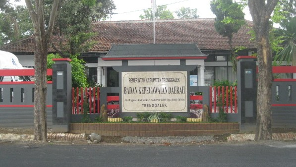

Sejarah
Dari berbagai sumber yang dapat dikumpulkan, kawasan Trenggalek telah dihuni selama ribuan tahun, sejak jaman pra-sejarah, dibuktikan dengan ditemukannya artifak jaman batu besar seperti : Menhir, Mortar, Batu Saji, Batu Dakon, Palinggih Batu, Lumpang Batu dan lain-lain yang tersebar di daerah-daerah yang terpisah. Berdasarkan data tersebut, diketahui jejak nenek moyang yang tersebar dari Pacitan menuju ke Wajak Tulungagung dengan jalur-jalur sebagai berikut:
- Dari Pacitan menuju Wajak melalui Panggul, Dongko, Pule, Karangan dan menyusuri sungai Ngasinan menuju Wajak Tulungagung;
- Dari Pacitan menuju Wajak melalui Ngerdani, Kampak, Gandusari dan menuju Wajak Tulungagung;
- Dari Pacitan menuju Wajak dengan menyusuri Pantai Selatan Panggul, Munjungan, Prigi dan akhirnya menuju ke Wajak Tulungagung.
Menurut HR VAN KEERKEREN, Homo Wajakensis (manusia purba wajak)
(mencari-jejak-manusia-wajak.html)
hidup pada masa plestosinatas, sedangkan peninggalan-peninggalan manusia purba Pacitan berkisar
antara 8.000 hingga 23.000 tahun yang lalu. Sehingga, disimpulkan bahwa pada jaman itulah
Kabupaten
Trenggalek dihuni oleh manusia.
Walaupun banyak ditemukan peninggalan manusia purba, untuk menentukan kapan Kabupaten Trenggalek
terbentuk belum cukup kuat karena artifak-artifak tersebut tidak ditemukan tulisan. Baru setelah
ditemukannya prasasti Kamsyaka atau tahun 929 M, dapat diketahui bahwa Trenggalek pada masa itu
sudah memiliki daerah-daerah yang mendapat hak otonomi / swatantra, diantaranya Perdikan Kampak
berbatasan dengan Samudra Indonesia di sebelah Selatan yang pada waktu itu wilayahnya meliputi
Panggul, Munjungan dan Prigi. Disamping itu, disinggung pula daerah Dawuhan dimana saat ini
daerah
Dawuhan tersebut juga termasuk wilayah Kabupaten Trenggalek. Pada jaman itu tulisan juga sudah
mulai
dikenal.
Setelah ditemukannya Prasasti Kamulan yang dibuat oleh Raja Sri Sarweswara
Triwi-kramataranindita
Srengga Lancana Dikwijayatunggadewa atau lebih dikenal dengan sebutan Kertajaya (Raja Kediri)
yang
juga bertuliskan hari, tanggal, bulan, dan tahun pembuatannya, maka Panitia Penggali Sejarah
menyimpulkan bahwa hari, tanggal, bulan dan tahun pada prasasti tersebut adalah Hari Jadi
Kabupaten
Trenggalek.